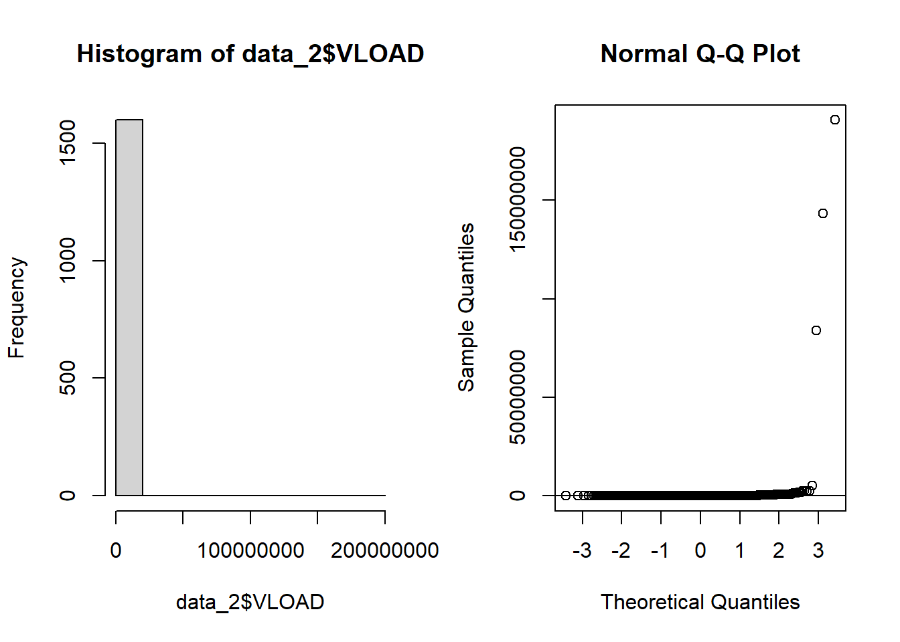
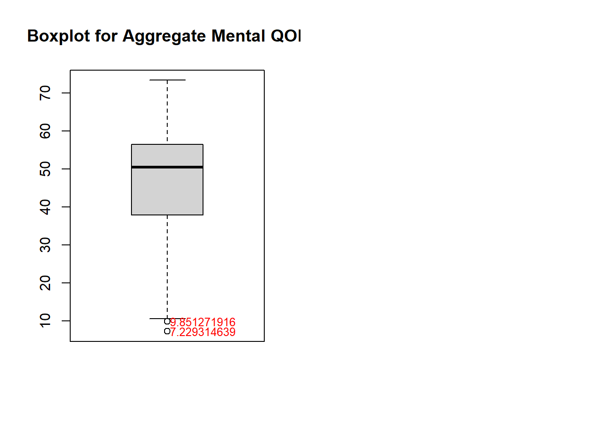
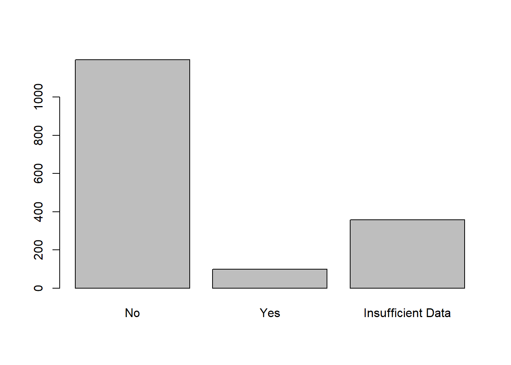

library(dplyr)
library(ggplot2)
library(tidyverse)
library(naniar) # Used to visualize missing data
library(kableExtra) # Used for pretty printing (kable_styling)
library(table1) # Used to make Table 1
library(tidyr) # Used for reshapingAdvanced Data Analysis - Project 2
Introduction
The aim of the current study is to assess how treatment response differs for HIV+ patients 2 years after initiating Highly Active Antiretroviral Therapy (HAART) based on hard drug usage (such as heroin or cocaine). This study is of particular scientific interest because it is unclear whether the use of hard drugs inhibits the immune system in humans; treatment strategies may differ based on these results. The researchers are interested in comparing subjects who never used hard drugs to current hard drug users (those that use hard drugs at year 2) or previous hard drug users (those who used drugs at year 0 or 1). Outcomes of interest are: viral load (HIV copies in a mL of blood), CD4+ T cell count (a measure of immunologic health), and aggregate physical and quality of life scores from the SF-36.
The clinical hypothesis is that, if hard drugs inhibit the immune system in humans, subjects who currently or previously used hard drugs will have higher viral load and lower CD4+ T cell counts than those who never used hard drugs. Additionally, the researchers are interested in knowing if potential differences between the drug use groups can be explained by differences in adherence to the treatment regimen. The researchers are agnostic on how quality of life changes after treatment, since side effects of the treatment are significant.
The project description provided by the PI is available below:

Method
Study Design
This is a secondary data analysis of the Multicenter AIDS Cohort Study, an ongoing prospective cohort study investigating the natural and treated disease progression of HIV-1 in bisexual men in 4 major cities in the U.S. Measurements for all variables were taken once per year over an 8-year time period; however, the current analysis is only concerned with treatment outcomes after 2 years of HAART. Data was received as a longform .csv file containing 33 columns along with a data dictionary. The main outcomes of interest are viral load, CD4+ T cell count, and aggregate physical and quality of life scores. Adherence to treatment regiment will be investigated as a potential confounder.
Potential covariates of interest include: marijuana usage since last visit and frequency of usage, income, BMI, high blood pressure, diabetes, liver disease stage 3 / 4, kidney disease, frailty related phenotype, total cholesterol, triglycerides, fasting LDL, dyslipidemia, depression score, smoking status, alcohol use since last visit, heroin or opiate use since last visit, intravenous drug use since last visit, race, education at baseline, age, if they took ART at the visit or if they have ever taken it before, and years since initiating ART.
Data Preparation
First we load the necessary packages
Then we import the data set.
data <- read_csv("C:/Users/sviea/Documents/Portfolio/Project_2/Project_2_R/RawData/hiv_dataset.csv")And take a look.
glimpse(data)Rows: 3,632
Columns: 33
$ newid <dbl> 1, 1, 1, 1, 2, 2, 2, 2, 2, 2, 3, 3, 3, 3, 3, 3, 3, 3, 4, 4,…
$ AGG_MENT <dbl> 44.90710, 58.20754, 59.65136, 56.80657, 46.34190, 48.71791,…
$ AGG_PHYS <dbl> 52.52557, 41.29347, 48.54453, 46.73991, 27.92331, 38.03807,…
$ HASHV <dbl> 1, 1, 1, 1, 1, 2, 1, 2, 1, 2, 1, 1, 2, 1, 2, 1, 1, 2, 2, 1,…
$ HASHF <dbl> NA, 4, 0, 0, 0, 0, 0, 0, 0, 0, 4, 4, 4, 0, 0, 0, 0, 0, 4, 2…
$ income <dbl> 4, 4, 4, 5, 2, 1, 2, 1, 9, 2, 6, 6, 6, NA, 7, 7, 7, NA, 1, …
$ BMI <dbl> 24.71756, 26.06801, 27.16421, 25.71786, 26.66936, 25.96576,…
$ HBP <dbl> 1, 1, 1, 1, 2, 2, 2, 2, 2, 2, 9, 9, 1, 1, 1, 1, 1, 1, 1, 1,…
$ DIAB <dbl> 1, 1, 1, 1, 9, 9, 9, 1, 1, 1, 9, 9, 1, 9, 9, 9, 9, 9, 1, 3,…
$ LIV34 <dbl> 1, 1, 1, 1, 1, 1, 1, 1, 1, 1, 1, 1, 1, 1, 2, 1, 1, 1, 1, 1,…
$ KID <dbl> 1, 1, 1, 1, 9, 9, 9, 2, 2, 2, 1, 1, 1, 2, 1, 1, 1, 2, 9, 9,…
$ FRP <dbl> 1, 1, 1, 1, 2, 1, 1, 1, 1, 1, 1, 1, 1, 1, 1, 1, 1, 1, 1, 2,…
$ FP <dbl> 1, 1, 1, 1, 9, 9, 1, 1, 1, 1, 1, 1, 1, 1, 1, 1, 1, 1, 1, 2,…
$ TCHOL <dbl> 133, 131, 180, 171, 125, NA, 134, 105, 141, 153, 170, 170, …
$ TRIG <dbl> 176, 107, 233, 139, NA, NA, NA, 104, 162, 127, NA, NA, 82, …
$ LDL <dbl> 62, 66, 86, 96, NA, NA, NA, 44, 73, 84, NA, NA, 127, NA, NA…
$ DYSLIP <dbl> 2, 1, 2, 1, 2, 9, 4, 1, 2, 1, 2, 2, 2, 9, 2, 2, 2, 2, 2, 4,…
$ CESD <dbl> 14, 2, 1, 18, 20, 18, 18, 21, 23, 17, 18, 22, 23, 14, 1, 1,…
$ SMOKE <dbl> 3, 3, 3, 3, 3, 3, 3, 3, 3, 3, 2, 2, 2, 2, 2, 2, 2, 2, 3, 3,…
$ DKGRP <dbl> 0, 3, 0, 1, 0, 3, 2, 1, 0, 1, 0, 0, 0, 1, 2, 1, 1, 2, 1, 2,…
$ HEROPIATE <dbl> 1, 1, 1, 1, 1, 1, 1, 1, 1, 1, 1, 1, 1, 1, 1, 1, 1, 1, 2, 2,…
$ IDU <dbl> 2, 1, 1, 1, 2, 1, 1, 1, 1, 1, 2, 2, 2, 2, 2, 1, 1, 1, 1, 1,…
$ LEU3N <dbl> 104.1659, 262.0061, 345.4010, 292.3271, 257.8278, 459.4562,…
$ VLOAD <dbl> 1.020130e+05, 2.700000e+01, 6.000000e+01, 9.000000e+00, 8.1…
$ ADH <dbl> NA, 2, 1, 1, NA, 1, 1, 1, 1, 1, NA, 1, 1, 2, 1, 1, 2, 1, NA…
$ RACE <dbl> 1, 1, 1, 1, 3, 3, 3, 3, 3, 3, 1, 1, 1, 1, 1, 1, 1, 1, 1, 1,…
$ EDUCBAS <dbl> 4, 4, 4, 4, 2, 2, 2, 2, 2, 2, 7, 7, 7, 7, 7, 7, 7, 7, 5, 5,…
$ hivpos <dbl> 1, 1, 1, 1, 1, 1, 1, 1, 1, 1, 1, 1, 1, 1, 1, 1, 1, 1, 1, 1,…
$ age <dbl> 52, 53, 54, 55, 54, 55, 56, 60, 61, 62, 47, 48, 49, 51, 52,…
$ ART <dbl> 0, 1, 1, 1, 0, 1, 1, 1, 1, 1, 0, 1, 1, 1, 1, 1, 1, 1, 0, 1,…
$ everART <dbl> 0, 1, 1, 1, 0, 1, 1, 1, 1, 1, 0, 1, 1, 1, 1, 1, 1, 1, 0, 1,…
$ years <dbl> 0, 1, 2, 3, 0, 1, 2, 6, 7, 8, 0, 1, 2, 4, 5, 6, 7, 8, 0, 1,…
$ hard_drugs <dbl> 1, 0, 0, 0, 1, 0, 0, 0, 0, 0, 1, 1, 1, 1, 1, 0, 0, 0, 1, 1,…Everything appears properly imported, however all our categorical variables are coded as doubles.
Let’s factor and label our categorical variables so they are appropriately represented (and not doubles, which will yield incorrect results in models)
# Converting all appropriate variables from doubles to categorical variables
data$HASHV <- factor(data$HASHV,
levels = c(1, 2),
labels = c("No", "Yes"))
data$HASHF <- factor(data$HASHF,
levels = c(0, 1, 2, 3, 4),
labels = c("Never", "Daily", "Weekly", "Monthly", "Less Often"))
data$income <- factor(data$income,
levels = c(1, 2, 3, 4, 5, 6, 7, 9),
labels = c("Less than $10,000", "$10,000-$19,999", "$20,000-$29,999", "$30,000-$39,999", "$40,000-$49,999", "$50,000-$59,999", "$60,000 or more", "Do not wish to answer"))
data$HBP <- factor(data$HBP,
levels = c(1, 2, 3, 4, 9, -1),
labels = c("No", "Yes", "No, based on data trajectory", "Yes, based on data trajectory", "Insufficient data, may include reported treatment without diagnosis", "Improbable Value"))
data$DIAB <- factor(data$DIAB,
levels = c(1, 2, 3, 4, 9),
labels = c("No", "Yes", "No, based on data trajectory", "Yes, based on data trajectory", "Insufficient data"))
data$LIV34 <- factor(data$LIV34,
levels = c(1, 2, 9),
labels = c("No", "Yes", "Insufficient Data"))
data$KID <- factor(data$KID,
levels = c(1, 2, 3, 4, 9),
labels = c("No", "Yes", "No, based on data trajectory", "Yes, based on data trajectory", "Insufficient data"))
data$FRP <- factor(data$FRP,
levels = c(1,2,9),
labels = c("No", "Yes", "Insufficient Data"))
data$FP <- factor(data$FP,
levels = c(1,2,9),
labels = c("No", "Yes", "Insufficient Data"))
data$DYSLIP <- factor(data$DYSLIP,
levels = c(1, 2, 3, 4, 9),
labels = c("No", "Yes", "No, based on data trajectory", "Yes, based on data trajectory", "Insufficient data"))
data$SMOKE <- factor(data$SMOKE,
levels = c(1, 2, 3),
labels = c("Never Smoked", "Former Smoker", "Current Smoker"))
data$DKGRP <- factor(data$DKGRP,
levels = c(0, 1, 2, 3),
labels = c("None", "1-3 drinks/week", "4-13 drinks/week", ">13 drinks/week"))
data$HEROPIATE <- factor(data$HEROPIATE,
levels = c(1, 2, -9),
labels = c("No", "Yes", "Not Specified"))
data$IDU <- factor(data$IDU,
levels = c(1, 2),
labels = c("No", "Yes"))
data$ADH <- factor(data$ADH,
levels = c(1, 2, 3, 4),
labels = c("100%", "95-99%", "75-94%", "<75%"))
data$RACE <- factor(data$RACE,
levels = c(1, 2, 3, 4, 5, 6, 7),
labels = c("White, non-Hispanic", "White, Hispanic", "Black, non-Hispanic ", "Black, Hispanic", "American Indian or Alaskan Native", "Asian or Pacific Islander", "Other Hispanic"))
data$EDUCBAS <- factor(data$EDUCBAS,
levels = c(1, 2, 3, 4, 5, 6, 7),
labels = c("8th grade or less ", "9,10, or 11th grade", "12th grade", "At least one year college but no degree", "Four years college / got degree ", "Some graduate work", "Post-graduate degree"))
data$hard_drugs <- factor(data$hard_drugs,
levels = c(0, 1),
labels = c("No", "Yes"))Let’s take another look to check that those variables are no longer doubles.
glimpse(data)Rows: 3,632
Columns: 33
$ newid <dbl> 1, 1, 1, 1, 2, 2, 2, 2, 2, 2, 3, 3, 3, 3, 3, 3, 3, 3, 4, 4,…
$ AGG_MENT <dbl> 44.90710, 58.20754, 59.65136, 56.80657, 46.34190, 48.71791,…
$ AGG_PHYS <dbl> 52.52557, 41.29347, 48.54453, 46.73991, 27.92331, 38.03807,…
$ HASHV <fct> No, No, No, No, No, Yes, No, Yes, No, Yes, No, No, Yes, No,…
$ HASHF <fct> NA, Less Often, Never, Never, Never, Never, Never, Never, N…
$ income <fct> "$30,000-$39,999", "$30,000-$39,999", "$30,000-$39,999", "$…
$ BMI <dbl> 24.71756, 26.06801, 27.16421, 25.71786, 26.66936, 25.96576,…
$ HBP <fct> "No", "No", "No", "No", "Yes", "Yes", "Yes", "Yes", "Yes", …
$ DIAB <fct> "No", "No", "No", "No", "Insufficient data", "Insufficient …
$ LIV34 <fct> No, No, No, No, No, No, No, No, No, No, No, No, No, No, Yes…
$ KID <fct> "No", "No", "No", "No", "Insufficient data", "Insufficient …
$ FRP <fct> No, No, No, No, Yes, No, No, No, No, No, No, No, No, No, No…
$ FP <fct> No, No, No, No, Insufficient Data, Insufficient Data, No, N…
$ TCHOL <dbl> 133, 131, 180, 171, 125, NA, 134, 105, 141, 153, 170, 170, …
$ TRIG <dbl> 176, 107, 233, 139, NA, NA, NA, 104, 162, 127, NA, NA, 82, …
$ LDL <dbl> 62, 66, 86, 96, NA, NA, NA, 44, 73, 84, NA, NA, 127, NA, NA…
$ DYSLIP <fct> "Yes", "No", "Yes", "No", "Yes", "Insufficient data", "Yes,…
$ CESD <dbl> 14, 2, 1, 18, 20, 18, 18, 21, 23, 17, 18, 22, 23, 14, 1, 1,…
$ SMOKE <fct> Current Smoker, Current Smoker, Current Smoker, Current Smo…
$ DKGRP <fct> None, >13 drinks/week, None, 1-3 drinks/week, None, >13 dri…
$ HEROPIATE <fct> No, No, No, No, No, No, No, No, No, No, No, No, No, No, No,…
$ IDU <fct> Yes, No, No, No, Yes, No, No, No, No, No, Yes, Yes, Yes, Ye…
$ LEU3N <dbl> 104.1659, 262.0061, 345.4010, 292.3271, 257.8278, 459.4562,…
$ VLOAD <dbl> 1.020130e+05, 2.700000e+01, 6.000000e+01, 9.000000e+00, 8.1…
$ ADH <fct> NA, 95-99%, 100%, 100%, NA, 100%, 100%, 100%, 100%, 100%, N…
$ RACE <fct> "White, non-Hispanic", "White, non-Hispanic", "White, non-H…
$ EDUCBAS <fct> "At least one year college but no degree", "At least one ye…
$ hivpos <dbl> 1, 1, 1, 1, 1, 1, 1, 1, 1, 1, 1, 1, 1, 1, 1, 1, 1, 1, 1, 1,…
$ age <dbl> 52, 53, 54, 55, 54, 55, 56, 60, 61, 62, 47, 48, 49, 51, 52,…
$ ART <dbl> 0, 1, 1, 1, 0, 1, 1, 1, 1, 1, 0, 1, 1, 1, 1, 1, 1, 1, 0, 1,…
$ everART <dbl> 0, 1, 1, 1, 0, 1, 1, 1, 1, 1, 0, 1, 1, 1, 1, 1, 1, 1, 0, 1,…
$ years <dbl> 0, 1, 2, 3, 0, 1, 2, 6, 7, 8, 0, 1, 2, 4, 5, 6, 7, 8, 0, 1,…
$ hard_drugs <fct> Yes, No, No, No, Yes, No, No, No, No, No, Yes, Yes, Yes, Ye…Looks good.
Now let’s take a look at the header to get a good feeling for our data.
kable(head(data), format = "html") %>%
kable_styling(bootstrap_options = c("striped", "hover", "condensed"))| newid | AGG_MENT | AGG_PHYS | HASHV | HASHF | income | BMI | HBP | DIAB | LIV34 | KID | FRP | FP | TCHOL | TRIG | LDL | DYSLIP | CESD | SMOKE | DKGRP | HEROPIATE | IDU | LEU3N | VLOAD | ADH | RACE | EDUCBAS | hivpos | age | ART | everART | years | hard_drugs |
|---|---|---|---|---|---|---|---|---|---|---|---|---|---|---|---|---|---|---|---|---|---|---|---|---|---|---|---|---|---|---|---|---|
| 1 | 44.90710 | 52.52557 | No | NA | $30,000-$39,999 | 24.71756 | No | No | No | No | No | No | 133 | 176 | 62 | Yes | 14 | Current Smoker | None | No | Yes | 104.1659 | 102013 | NA | White, non-Hispanic | At least one year college but no degree | 1 | 52 | 0 | 0 | 0 | Yes |
| 1 | 58.20754 | 41.29346 | No | Less Often | $30,000-$39,999 | 26.06801 | No | No | No | No | No | No | 131 | 107 | 66 | No | 2 | Current Smoker | >13 drinks/week | No | No | 262.0061 | 27 | 95-99% | White, non-Hispanic | At least one year college but no degree | 1 | 53 | 1 | 1 | 1 | No |
| 1 | 59.65136 | 48.54453 | No | Never | $30,000-$39,999 | 27.16421 | No | No | No | No | No | No | 180 | 233 | 86 | Yes | 1 | Current Smoker | None | No | No | 345.4010 | 60 | 100% | White, non-Hispanic | At least one year college but no degree | 1 | 54 | 1 | 1 | 2 | No |
| 1 | 56.80657 | 46.73991 | No | Never | $40,000-$49,999 | 25.71786 | No | No | No | No | No | No | 171 | 139 | 96 | No | 18 | Current Smoker | 1-3 drinks/week | No | No | 292.3271 | 9 | 100% | White, non-Hispanic | At least one year college but no degree | 1 | 55 | 1 | 1 | 3 | No |
| 2 | 46.34190 | 27.92331 | No | Never | $10,000-$19,999 | 26.66936 | Yes | Insufficient data | No | Insufficient data | Yes | Insufficient Data | 125 | NA | NA | Yes | 20 | Current Smoker | None | No | Yes | 257.8278 | 8121 | NA | Black, non-Hispanic | 9,10, or 11th grade | 1 | 54 | 0 | 0 | 0 | Yes |
| 2 | 48.71791 | 38.03807 | Yes | Never | Less than $10,000 | 25.96576 | Yes | Insufficient data | No | Insufficient data | No | Insufficient Data | NA | NA | NA | Insufficient data | 18 | Current Smoker | >13 drinks/week | No | No | 459.4562 | 21 | 100% | Black, non-Hispanic | 9,10, or 11th grade | 1 | 55 | 1 | 1 | 1 | No |
We can see the data set is in long form. Let’s convert that to wideform.
data_wide <- pivot_wider(data, id_cols = newid, names_from = years, values_from = -c(newid, years, RACE, EDUCBAS, hivpos, everART))And take a look at the header to check that was done correctly.
kable(head(data_wide), format = "html") %>%
kable_styling(bootstrap_options = c("striped", "hover", "condensed"))| newid | AGG_MENT_0 | AGG_MENT_1 | AGG_MENT_2 | AGG_MENT_3 | AGG_MENT_6 | AGG_MENT_7 | AGG_MENT_8 | AGG_MENT_4 | AGG_MENT_5 | AGG_PHYS_0 | AGG_PHYS_1 | AGG_PHYS_2 | AGG_PHYS_3 | AGG_PHYS_6 | AGG_PHYS_7 | AGG_PHYS_8 | AGG_PHYS_4 | AGG_PHYS_5 | HASHV_0 | HASHV_1 | HASHV_2 | HASHV_3 | HASHV_6 | HASHV_7 | HASHV_8 | HASHV_4 | HASHV_5 | HASHF_0 | HASHF_1 | HASHF_2 | HASHF_3 | HASHF_6 | HASHF_7 | HASHF_8 | HASHF_4 | HASHF_5 | income_0 | income_1 | income_2 | income_3 | income_6 | income_7 | income_8 | income_4 | income_5 | BMI_0 | BMI_1 | BMI_2 | BMI_3 | BMI_6 | BMI_7 | BMI_8 | BMI_4 | BMI_5 | HBP_0 | HBP_1 | HBP_2 | HBP_3 | HBP_6 | HBP_7 | HBP_8 | HBP_4 | HBP_5 | DIAB_0 | DIAB_1 | DIAB_2 | DIAB_3 | DIAB_6 | DIAB_7 | DIAB_8 | DIAB_4 | DIAB_5 | LIV34_0 | LIV34_1 | LIV34_2 | LIV34_3 | LIV34_6 | LIV34_7 | LIV34_8 | LIV34_4 | LIV34_5 | KID_0 | KID_1 | KID_2 | KID_3 | KID_6 | KID_7 | KID_8 | KID_4 | KID_5 | FRP_0 | FRP_1 | FRP_2 | FRP_3 | FRP_6 | FRP_7 | FRP_8 | FRP_4 | FRP_5 | FP_0 | FP_1 | FP_2 | FP_3 | FP_6 | FP_7 | FP_8 | FP_4 | FP_5 | TCHOL_0 | TCHOL_1 | TCHOL_2 | TCHOL_3 | TCHOL_6 | TCHOL_7 | TCHOL_8 | TCHOL_4 | TCHOL_5 | TRIG_0 | TRIG_1 | TRIG_2 | TRIG_3 | TRIG_6 | TRIG_7 | TRIG_8 | TRIG_4 | TRIG_5 | LDL_0 | LDL_1 | LDL_2 | LDL_3 | LDL_6 | LDL_7 | LDL_8 | LDL_4 | LDL_5 | DYSLIP_0 | DYSLIP_1 | DYSLIP_2 | DYSLIP_3 | DYSLIP_6 | DYSLIP_7 | DYSLIP_8 | DYSLIP_4 | DYSLIP_5 | CESD_0 | CESD_1 | CESD_2 | CESD_3 | CESD_6 | CESD_7 | CESD_8 | CESD_4 | CESD_5 | SMOKE_0 | SMOKE_1 | SMOKE_2 | SMOKE_3 | SMOKE_6 | SMOKE_7 | SMOKE_8 | SMOKE_4 | SMOKE_5 | DKGRP_0 | DKGRP_1 | DKGRP_2 | DKGRP_3 | DKGRP_6 | DKGRP_7 | DKGRP_8 | DKGRP_4 | DKGRP_5 | HEROPIATE_0 | HEROPIATE_1 | HEROPIATE_2 | HEROPIATE_3 | HEROPIATE_6 | HEROPIATE_7 | HEROPIATE_8 | HEROPIATE_4 | HEROPIATE_5 | IDU_0 | IDU_1 | IDU_2 | IDU_3 | IDU_6 | IDU_7 | IDU_8 | IDU_4 | IDU_5 | LEU3N_0 | LEU3N_1 | LEU3N_2 | LEU3N_3 | LEU3N_6 | LEU3N_7 | LEU3N_8 | LEU3N_4 | LEU3N_5 | VLOAD_0 | VLOAD_1 | VLOAD_2 | VLOAD_3 | VLOAD_6 | VLOAD_7 | VLOAD_8 | VLOAD_4 | VLOAD_5 | ADH_0 | ADH_1 | ADH_2 | ADH_3 | ADH_6 | ADH_7 | ADH_8 | ADH_4 | ADH_5 | age_0 | age_1 | age_2 | age_3 | age_6 | age_7 | age_8 | age_4 | age_5 | ART_0 | ART_1 | ART_2 | ART_3 | ART_6 | ART_7 | ART_8 | ART_4 | ART_5 | hard_drugs_0 | hard_drugs_1 | hard_drugs_2 | hard_drugs_3 | hard_drugs_6 | hard_drugs_7 | hard_drugs_8 | hard_drugs_4 | hard_drugs_5 |
|---|---|---|---|---|---|---|---|---|---|---|---|---|---|---|---|---|---|---|---|---|---|---|---|---|---|---|---|---|---|---|---|---|---|---|---|---|---|---|---|---|---|---|---|---|---|---|---|---|---|---|---|---|---|---|---|---|---|---|---|---|---|---|---|---|---|---|---|---|---|---|---|---|---|---|---|---|---|---|---|---|---|---|---|---|---|---|---|---|---|---|---|---|---|---|---|---|---|---|---|---|---|---|---|---|---|---|---|---|---|---|---|---|---|---|---|---|---|---|---|---|---|---|---|---|---|---|---|---|---|---|---|---|---|---|---|---|---|---|---|---|---|---|---|---|---|---|---|---|---|---|---|---|---|---|---|---|---|---|---|---|---|---|---|---|---|---|---|---|---|---|---|---|---|---|---|---|---|---|---|---|---|---|---|---|---|---|---|---|---|---|---|---|---|---|---|---|---|---|---|---|---|---|---|---|---|---|---|---|---|---|---|---|---|---|---|---|---|---|---|---|---|---|---|---|---|---|---|---|---|---|---|---|---|---|---|---|---|---|---|---|---|---|---|
| 1 | 44.90710 | 58.20754 | 59.65136 | 56.80657 | NA | NA | NA | NA | NA | 52.52557 | 41.29346 | 48.54453 | 46.73991 | NA | NA | NA | NA | NA | No | No | No | No | NA | NA | NA | NA | NA | NA | Less Often | Never | Never | NA | NA | NA | NA | NA | $30,000-$39,999 | $30,000-$39,999 | $30,000-$39,999 | $40,000-$49,999 | NA | NA | NA | NA | NA | 24.71756 | 26.06801 | 27.16421 | 25.71786 | NA | NA | NA | NA | NA | No | No | No | No | NA | NA | NA | NA | NA | No | No | No | No | NA | NA | NA | NA | NA | No | No | No | No | NA | NA | NA | NA | NA | No | No | No | No | NA | NA | NA | NA | NA | No | No | No | No | NA | NA | NA | NA | NA | No | No | No | No | NA | NA | NA | NA | NA | 133 | 131 | 180 | 171 | NA | NA | NA | NA | NA | 176 | 107 | 233 | 139 | NA | NA | NA | NA | NA | 62 | 66 | 86 | 96 | NA | NA | NA | NA | NA | Yes | No | Yes | No | NA | NA | NA | NA | NA | 14 | 2 | 1 | 18 | NA | NA | NA | NA | NA | Current Smoker | Current Smoker | Current Smoker | Current Smoker | NA | NA | NA | NA | NA | None | >13 drinks/week | None | 1-3 drinks/week | NA | NA | NA | NA | NA | No | No | No | No | NA | NA | NA | NA | NA | Yes | No | No | No | NA | NA | NA | NA | NA | 104.1659 | 262.0061 | 345.4010 | 292.3271 | NA | NA | NA | NA | NA | 102013.000 | 27.00000 | 60.00000 | 9 | NA | NA | NA | NA | NA | NA | 95-99% | 100% | 100% | NA | NA | NA | NA | NA | 52 | 53 | 54 | 55 | NA | NA | NA | NA | NA | 0 | 1 | 1 | 1 | NA | NA | NA | NA | NA | Yes | No | No | No | NA | NA | NA | NA | NA |
| 2 | 46.34190 | 48.71791 | 45.41483 | NA | 48.05706 | 48.53362 | 58.60481 | NA | NA | 27.92331 | 38.03807 | 37.32204 | NA | 31.80529 | 42.05479 | 34.22034 | NA | NA | No | Yes | No | NA | Yes | No | Yes | NA | NA | Never | Never | Never | NA | Never | Never | Never | NA | NA | $10,000-$19,999 | Less than $10,000 | $10,000-$19,999 | NA | Less than $10,000 | Do not wish to answer | $10,000-$19,999 | NA | NA | 26.66936 | 25.96576 | 26.96037 | NA | 27.56218 | 27.55110 | 27.08387 | NA | NA | Yes | Yes | Yes | NA | Yes | Yes | Yes | NA | NA | Insufficient data | Insufficient data | Insufficient data | NA | No | No | No | NA | NA | No | No | No | NA | No | No | No | NA | NA | Insufficient data | Insufficient data | Insufficient data | NA | Yes | Yes | Yes | NA | NA | Yes | No | No | NA | No | No | No | NA | NA | Insufficient Data | Insufficient Data | No | NA | No | No | No | NA | NA | 125 | NA | 134 | NA | 105 | 141 | 153 | NA | NA | NA | NA | NA | NA | 104 | 162 | 127 | NA | NA | NA | NA | NA | NA | 44 | 73 | 84 | NA | NA | Yes | Insufficient data | Yes, based on data trajectory | NA | No | Yes | No | NA | NA | 20 | 18 | 18 | NA | 21 | 23 | 17 | NA | NA | Current Smoker | Current Smoker | Current Smoker | NA | Current Smoker | Current Smoker | Current Smoker | NA | NA | None | >13 drinks/week | 4-13 drinks/week | NA | 1-3 drinks/week | None | 1-3 drinks/week | NA | NA | No | No | No | NA | No | No | No | NA | NA | Yes | No | No | NA | No | No | No | NA | NA | 257.8278 | 459.4562 | 263.0693 | NA | 238.6691 | 253.8643 | 246.1490 | NA | NA | 8121.000 | 21.00000 | 48.00000 | NA | 20.000000 | 32.000000 | 70.000000 | NA | NA | NA | 100% | 100% | NA | 100% | 100% | 100% | NA | NA | 54 | 55 | 56 | NA | 60 | 61 | 62 | NA | NA | 0 | 1 | 1 | NA | 1 | 1 | 1 | NA | NA | Yes | No | No | NA | No | No | No | NA | NA |
| 3 | 40.22337 | 44.42011 | 41.70079 | NA | 58.07309 | 59.91793 | 58.09464 | 50.03523 | 55.93561 | 60.06970 | 62.71705 | 58.51450 | NA | 52.45267 | 54.91596 | 57.69027 | 51.93553 | 56.14367 | No | No | Yes | NA | No | No | Yes | No | Yes | Less Often | Less Often | Less Often | NA | Never | Never | Never | Never | Never | $50,000-$59,999 | $50,000-$59,999 | $50,000-$59,999 | NA | $60,000 or more | $60,000 or more | NA | NA | $60,000 or more | 28.59085 | 28.35320 | 28.18510 | NA | 31.26218 | 27.51856 | 30.03093 | 26.76923 | 30.42388 | Insufficient data, may include reported treatment without diagnosis | Insufficient data, may include reported treatment without diagnosis | No | NA | No | No | No | No | No | Insufficient data | Insufficient data | No | NA | Insufficient data | Insufficient data | Insufficient data | Insufficient data | Insufficient data | No | No | No | NA | No | No | No | No | Yes | No | No | No | NA | No | No | Yes | Yes | No | No | No | No | NA | No | No | No | No | No | No | No | No | NA | No | No | No | No | No | 170 | 170 | 180 | NA | 137 | 132 | 165 | 180 | 162 | NA | NA | 82 | NA | NA | NA | NA | NA | NA | NA | NA | 127 | NA | NA | NA | NA | NA | NA | Yes | Yes | Yes | NA | Yes | Yes | Yes | Insufficient data | Yes | 18 | 22 | 23 | NA | 1 | 1 | 0 | 14 | 1 | Former Smoker | Former Smoker | Former Smoker | NA | Former Smoker | Former Smoker | Former Smoker | Former Smoker | Former Smoker | None | None | None | NA | 1-3 drinks/week | 1-3 drinks/week | 4-13 drinks/week | 1-3 drinks/week | 4-13 drinks/week | No | No | No | NA | No | No | No | No | No | Yes | Yes | Yes | NA | No | No | No | Yes | Yes | 563.1223 | 488.9100 | 405.1816 | NA | 327.5391 | 256.2515 | 317.7432 | 366.3389 | 416.9268 | 4001.556 | 2020.00000 | 27.50917 | NA | 6.726179 | 3.959164 | 3.726179 | 4.219373 | 6.452357 | NA | 100% | 100% | NA | 100% | 95-99% | 100% | 95-99% | 100% | 47 | 48 | 49 | NA | 53 | 54 | 55 | 51 | 52 | 0 | 1 | 1 | NA | 1 | 1 | 1 | 1 | 1 | Yes | Yes | Yes | NA | No | No | No | Yes | Yes |
| 4 | 42.90638 | 31.15971 | 52.68223 | 50.79011 | 27.16408 | 43.93937 | 37.20980 | 56.31312 | 44.07339 | 50.78850 | 44.62883 | 51.50533 | 57.02273 | 59.50442 | 54.22589 | 54.05184 | 32.41548 | 52.80676 | Yes | No | No | NA | No | No | Yes | No | No | Less Often | Weekly | Never | Never | Never | Never | Never | Never | Never | Less than $10,000 | Less than $10,000 | NA | $20,000-$29,999 | $10,000-$19,999 | $10,000-$19,999 | $10,000-$19,999 | $20,000-$29,999 | $20,000-$29,999 | 20.36451 | 18.21865 | 20.28485 | 21.10710 | 19.39945 | 20.40957 | 21.70983 | 18.93679 | 21.60014 | No | No | No | No | No | No | No | No | No | No | No, based on data trajectory | No | No, based on data trajectory | No | No | No | No | No | No | No | No | No | No | No | No | No | No | Insufficient data | Insufficient data | Insufficient data | No | No | No | No | No | No | No | Yes | No | No | No | No | No | No | No | No | Yes | No | No | No | No | No | No | No | 214 | 197 | 251 | 234 | 286 | 151 | 183 | 172 | 251 | 97 | NA | 260 | NA | 148 | NA | 50 | 155 | 129 | 147 | NA | 152 | NA | 208 | NA | 109 | 97 | 173 | Yes | Yes, based on data trajectory | Yes | Yes, based on data trajectory | Yes | Yes | Yes | Yes | Yes | 14 | 25 | 13 | 9 | 13 | 8 | 10 | 8 | 6 | Current Smoker | Current Smoker | Current Smoker | Current Smoker | Former Smoker | Former Smoker | Former Smoker | Current Smoker | Current Smoker | 1-3 drinks/week | 4-13 drinks/week | None | 1-3 drinks/week | None | 4-13 drinks/week | 1-3 drinks/week | >13 drinks/week | 1-3 drinks/week | Yes | Yes | No | No | No | No | No | No | No | No | No | No | No | No | No | No | No | No | 110.4218 | 159.6297 | 179.6409 | 313.4508 | 415.3531 | 297.3159 | 419.2018 | 367.6589 | 388.0592 | 740.000 | 26.64732 | 27.00000 | 29 | 38.000000 | 15.000000 | 3.000000 | 31.000000 | 35.000000 | NA | 75-94% | 95-99% | 95-99% | 100% | 100% | 100% | 95-99% | 95-99% | 44 | 45 | 46 | 47 | 50 | 51 | 52 | 48 | 49 | 0 | 1 | 1 | 1 | 1 | 1 | 1 | 1 | 1 | Yes | Yes | No | No | No | No | No | No | No |
| 5 | 56.42904 | 56.21993 | 66.50629 | 55.86697 | 59.71502 | 62.45485 | 59.37057 | 64.07250 | 61.35824 | 43.75671 | 30.47055 | 18.82350 | 29.57817 | 37.82895 | 37.13248 | 37.25672 | 43.33116 | 41.39731 | No | NA | Yes | Yes | No | Yes | No | No | No | Monthly | Monthly | Less Often | Less Often | Never | Never | Never | Less Often | Less Often | $50,000-$59,999 | $10,000-$19,999 | Do not wish to answer | Do not wish to answer | $10,000-$19,999 | NA | $10,000-$19,999 | $10,000-$19,999 | $10,000-$19,999 | 22.26986 | 24.97865 | 20.80193 | 23.44980 | 25.45821 | 24.73481 | 25.39507 | 23.87846 | 25.47809 | No | No | No | No | No | Yes | Yes | No | No | Insufficient data | Insufficient data | Insufficient data | Insufficient data | No | No | Yes | Insufficient data | Insufficient data | No | No | Insufficient Data | Insufficient Data | No | No | No | Insufficient Data | Insufficient Data | Insufficient data | Insufficient data | Insufficient data | Insufficient data | Insufficient data | Insufficient data | Insufficient data | Insufficient data | Insufficient data | No | No | Yes | Yes | No | No | No | No | No | Insufficient Data | Insufficient Data | Yes | Insufficient Data | Insufficient Data | Insufficient Data | Insufficient Data | Insufficient Data | Insufficient Data | 196 | 204 | NA | NA | 193 | 209 | 106 | NA | 213 | 162 | 192 | NA | NA | 169 | 212 | 193 | NA | NA | 135 | NA | NA | NA | 130 | 140 | 41 | NA | 141 | Yes | Insufficient data | Yes, based on data trajectory | Insufficient data | Yes | Yes | Yes | Insufficient data | Yes | 1 | 0 | 1 | 4 | 1 | 1 | 1 | 7 | 2 | Current Smoker | Current Smoker | Current Smoker | Current Smoker | Current Smoker | Current Smoker | Current Smoker | Current Smoker | Current Smoker | None | 1-3 drinks/week | 1-3 drinks/week | 1-3 drinks/week | 1-3 drinks/week | None | 4-13 drinks/week | None | 4-13 drinks/week | Not Specified | NA | No | No | No | No | No | No | No | Yes | Yes | Yes | Yes | Yes | Yes | Yes | No | Yes | 252.6634 | 92.6634 | 59.6219 | 366.3631 | 273.9229 | 362.7803 | 248.5862 | 225.1079 | 272.9310 | 62727.039 | 30389.00000 | 419.50000 | 28 | 35.000000 | 49.000000 | 33.046753 | 9.000000 | 49.594917 | NA | 100% | 100% | 100% | 95-99% | 95-99% | 75-94% | 95-99% | 75-94% | 53 | 54 | 55 | 56 | 59 | 60 | 61 | 57 | 58 | 0 | 1 | 1 | 1 | 1 | 1 | 1 | 1 | 1 | Yes | Yes | Yes | Yes | Yes | Yes | Yes | No | Yes |
| 6 | 59.74437 | 53.84956 | 50.26010 | NA | NA | NA | NA | NA | NA | 56.86261 | 57.91396 | 55.95668 | NA | NA | NA | NA | NA | NA | No | No | No | NA | NA | NA | NA | NA | NA | NA | NA | Less Often | NA | NA | NA | NA | NA | NA | $30,000-$39,999 | $30,000-$39,999 | NA | NA | NA | NA | NA | NA | NA | 23.22166 | 23.75318 | 22.41001 | NA | NA | NA | NA | NA | NA | No | No | No | NA | NA | NA | NA | NA | NA | Insufficient data | Insufficient data | No | NA | NA | NA | NA | NA | NA | No | No | No | NA | NA | NA | NA | NA | NA | No | No | No | NA | NA | NA | NA | NA | NA | No | No | No | NA | NA | NA | NA | NA | NA | No | No | No | NA | NA | NA | NA | NA | NA | 216 | 216 | 151 | NA | NA | NA | NA | NA | NA | NA | NA | 125 | NA | NA | NA | NA | NA | NA | NA | NA | 81 | NA | NA | NA | NA | NA | NA | Insufficient data | Insufficient data | No | NA | NA | NA | NA | NA | NA | 3 | 3 | 4 | NA | NA | NA | NA | NA | NA | Never Smoked | Never Smoked | Never Smoked | NA | NA | NA | NA | NA | NA | 1-3 drinks/week | 1-3 drinks/week | 1-3 drinks/week | NA | NA | NA | NA | NA | NA | No | No | No | NA | NA | NA | NA | NA | NA | No | No | Yes | NA | NA | NA | NA | NA | NA | 634.1246 | 745.6517 | 893.4328 | NA | NA | NA | NA | NA | NA | 15745.000 | 7870.00000 | 53.50000 | NA | NA | NA | NA | NA | NA | NA | 95-99% | 95-99% | NA | NA | NA | NA | NA | NA | 36 | 37 | 38 | NA | NA | NA | NA | NA | NA | 0 | 1 | 1 | NA | NA | NA | NA | NA | NA | No | No | Yes | NA | NA | NA | NA | NA | NA |
Good. now we have a long and wide form of the data set for all 8 years of the study.
However, the experimenters are only interested in the first 2 years.
Out of curiosity, let’s look at how many participants they had each year.
barplot(table(data$years))
table(data$years)
0 1 2 3 4 5 6 7 8
550 550 550 414 381 338 325 272 252 This is interesting, we don’t seem to have as drastic a drop off as I expected. The researchers managed to retain all participants for the first 2 years, and 50% by the end of the 8-year study.
Let’s filter both data sets to only include values from the first 2 years.
# Filter long form data set to be include only first 2 years
data_2 <- data[data$years <= 2,]
# Pretty print
kable(head(data_2), format = "html") %>%
kable_styling(bootstrap_options = c("condensed", "striped", "hover"))| newid | AGG_MENT | AGG_PHYS | HASHV | HASHF | income | BMI | HBP | DIAB | LIV34 | KID | FRP | FP | TCHOL | TRIG | LDL | DYSLIP | CESD | SMOKE | DKGRP | HEROPIATE | IDU | LEU3N | VLOAD | ADH | RACE | EDUCBAS | hivpos | age | ART | everART | years | hard_drugs |
|---|---|---|---|---|---|---|---|---|---|---|---|---|---|---|---|---|---|---|---|---|---|---|---|---|---|---|---|---|---|---|---|---|
| 1 | 44.90710 | 52.52557 | No | NA | $30,000-$39,999 | 24.71756 | No | No | No | No | No | No | 133 | 176 | 62 | Yes | 14 | Current Smoker | None | No | Yes | 104.1659 | 102013 | NA | White, non-Hispanic | At least one year college but no degree | 1 | 52 | 0 | 0 | 0 | Yes |
| 1 | 58.20754 | 41.29346 | No | Less Often | $30,000-$39,999 | 26.06801 | No | No | No | No | No | No | 131 | 107 | 66 | No | 2 | Current Smoker | >13 drinks/week | No | No | 262.0061 | 27 | 95-99% | White, non-Hispanic | At least one year college but no degree | 1 | 53 | 1 | 1 | 1 | No |
| 1 | 59.65136 | 48.54453 | No | Never | $30,000-$39,999 | 27.16421 | No | No | No | No | No | No | 180 | 233 | 86 | Yes | 1 | Current Smoker | None | No | No | 345.4010 | 60 | 100% | White, non-Hispanic | At least one year college but no degree | 1 | 54 | 1 | 1 | 2 | No |
| 2 | 46.34190 | 27.92331 | No | Never | $10,000-$19,999 | 26.66936 | Yes | Insufficient data | No | Insufficient data | Yes | Insufficient Data | 125 | NA | NA | Yes | 20 | Current Smoker | None | No | Yes | 257.8278 | 8121 | NA | Black, non-Hispanic | 9,10, or 11th grade | 1 | 54 | 0 | 0 | 0 | Yes |
| 2 | 48.71791 | 38.03807 | Yes | Never | Less than $10,000 | 25.96576 | Yes | Insufficient data | No | Insufficient data | No | Insufficient Data | NA | NA | NA | Insufficient data | 18 | Current Smoker | >13 drinks/week | No | No | 459.4562 | 21 | 100% | Black, non-Hispanic | 9,10, or 11th grade | 1 | 55 | 1 | 1 | 1 | No |
| 2 | 45.41483 | 37.32204 | No | Never | $10,000-$19,999 | 26.96037 | Yes | Insufficient data | No | Insufficient data | No | No | 134 | NA | NA | Yes, based on data trajectory | 18 | Current Smoker | 4-13 drinks/week | No | No | 263.0693 | 48 | 100% | Black, non-Hispanic | 9,10, or 11th grade | 1 | 56 | 1 | 1 | 2 | No |
# Create new wideform data set for first 2 years of study
data_wide_2 <- pivot_wider(data_2, id_cols = newid, names_from = years, values_from = -c(newid, years))
kable(head(data_wide_2), format = "html") %>%
kable_styling(bootstrap_options = c("condensed", "striped", "hover"))| newid | AGG_MENT_0 | AGG_MENT_1 | AGG_MENT_2 | AGG_PHYS_0 | AGG_PHYS_1 | AGG_PHYS_2 | HASHV_0 | HASHV_1 | HASHV_2 | HASHF_0 | HASHF_1 | HASHF_2 | income_0 | income_1 | income_2 | BMI_0 | BMI_1 | BMI_2 | HBP_0 | HBP_1 | HBP_2 | DIAB_0 | DIAB_1 | DIAB_2 | LIV34_0 | LIV34_1 | LIV34_2 | KID_0 | KID_1 | KID_2 | FRP_0 | FRP_1 | FRP_2 | FP_0 | FP_1 | FP_2 | TCHOL_0 | TCHOL_1 | TCHOL_2 | TRIG_0 | TRIG_1 | TRIG_2 | LDL_0 | LDL_1 | LDL_2 | DYSLIP_0 | DYSLIP_1 | DYSLIP_2 | CESD_0 | CESD_1 | CESD_2 | SMOKE_0 | SMOKE_1 | SMOKE_2 | DKGRP_0 | DKGRP_1 | DKGRP_2 | HEROPIATE_0 | HEROPIATE_1 | HEROPIATE_2 | IDU_0 | IDU_1 | IDU_2 | LEU3N_0 | LEU3N_1 | LEU3N_2 | VLOAD_0 | VLOAD_1 | VLOAD_2 | ADH_0 | ADH_1 | ADH_2 | RACE_0 | RACE_1 | RACE_2 | EDUCBAS_0 | EDUCBAS_1 | EDUCBAS_2 | hivpos_0 | hivpos_1 | hivpos_2 | age_0 | age_1 | age_2 | ART_0 | ART_1 | ART_2 | everART_0 | everART_1 | everART_2 | hard_drugs_0 | hard_drugs_1 | hard_drugs_2 |
|---|---|---|---|---|---|---|---|---|---|---|---|---|---|---|---|---|---|---|---|---|---|---|---|---|---|---|---|---|---|---|---|---|---|---|---|---|---|---|---|---|---|---|---|---|---|---|---|---|---|---|---|---|---|---|---|---|---|---|---|---|---|---|---|---|---|---|---|---|---|---|---|---|---|---|---|---|---|---|---|---|---|---|---|---|---|---|---|---|---|---|---|---|---|
| 1 | 44.90710 | 58.20754 | 59.65136 | 52.52557 | 41.29346 | 48.54453 | No | No | No | NA | Less Often | Never | $30,000-$39,999 | $30,000-$39,999 | $30,000-$39,999 | 24.71756 | 26.06801 | 27.16421 | No | No | No | No | No | No | No | No | No | No | No | No | No | No | No | No | No | No | 133 | 131 | 180 | 176 | 107 | 233 | 62 | 66 | 86 | Yes | No | Yes | 14 | 2 | 1 | Current Smoker | Current Smoker | Current Smoker | None | >13 drinks/week | None | No | No | No | Yes | No | No | 104.1659 | 262.0061 | 345.4010 | 102013.000 | 27.00000 | 60.00000 | NA | 95-99% | 100% | White, non-Hispanic | White, non-Hispanic | White, non-Hispanic | At least one year college but no degree | At least one year college but no degree | At least one year college but no degree | 1 | 1 | 1 | 52 | 53 | 54 | 0 | 1 | 1 | 0 | 1 | 1 | Yes | No | No |
| 2 | 46.34190 | 48.71791 | 45.41483 | 27.92331 | 38.03807 | 37.32204 | No | Yes | No | Never | Never | Never | $10,000-$19,999 | Less than $10,000 | $10,000-$19,999 | 26.66936 | 25.96576 | 26.96037 | Yes | Yes | Yes | Insufficient data | Insufficient data | Insufficient data | No | No | No | Insufficient data | Insufficient data | Insufficient data | Yes | No | No | Insufficient Data | Insufficient Data | No | 125 | NA | 134 | NA | NA | NA | NA | NA | NA | Yes | Insufficient data | Yes, based on data trajectory | 20 | 18 | 18 | Current Smoker | Current Smoker | Current Smoker | None | >13 drinks/week | 4-13 drinks/week | No | No | No | Yes | No | No | 257.8278 | 459.4562 | 263.0693 | 8121.000 | 21.00000 | 48.00000 | NA | 100% | 100% | Black, non-Hispanic | Black, non-Hispanic | Black, non-Hispanic | 9,10, or 11th grade | 9,10, or 11th grade | 9,10, or 11th grade | 1 | 1 | 1 | 54 | 55 | 56 | 0 | 1 | 1 | 0 | 1 | 1 | Yes | No | No |
| 3 | 40.22337 | 44.42011 | 41.70079 | 60.06970 | 62.71705 | 58.51450 | No | No | Yes | Less Often | Less Often | Less Often | $50,000-$59,999 | $50,000-$59,999 | $50,000-$59,999 | 28.59085 | 28.35320 | 28.18510 | Insufficient data, may include reported treatment without diagnosis | Insufficient data, may include reported treatment without diagnosis | No | Insufficient data | Insufficient data | No | No | No | No | No | No | No | No | No | No | No | No | No | 170 | 170 | 180 | NA | NA | 82 | NA | NA | 127 | Yes | Yes | Yes | 18 | 22 | 23 | Former Smoker | Former Smoker | Former Smoker | None | None | None | No | No | No | Yes | Yes | Yes | 563.1223 | 488.9100 | 405.1816 | 4001.556 | 2020.00000 | 27.50917 | NA | 100% | 100% | White, non-Hispanic | White, non-Hispanic | White, non-Hispanic | Post-graduate degree | Post-graduate degree | Post-graduate degree | 1 | 1 | 1 | 47 | 48 | 49 | 0 | 1 | 1 | 0 | 1 | 1 | Yes | Yes | Yes |
| 4 | 42.90638 | 31.15971 | 52.68223 | 50.78850 | 44.62883 | 51.50533 | Yes | No | No | Less Often | Weekly | Never | Less than $10,000 | Less than $10,000 | NA | 20.36451 | 18.21865 | 20.28485 | No | No | No | No | No, based on data trajectory | No | No | No | No | Insufficient data | Insufficient data | Insufficient data | No | Yes | No | No | Yes | No | 214 | 197 | 251 | 97 | NA | 260 | 147 | NA | 152 | Yes | Yes, based on data trajectory | Yes | 14 | 25 | 13 | Current Smoker | Current Smoker | Current Smoker | 1-3 drinks/week | 4-13 drinks/week | None | Yes | Yes | No | No | No | No | 110.4218 | 159.6297 | 179.6409 | 740.000 | 26.64732 | 27.00000 | NA | 75-94% | 95-99% | White, non-Hispanic | White, non-Hispanic | White, non-Hispanic | Four years college / got degree | Four years college / got degree | Four years college / got degree | 1 | 1 | 1 | 44 | 45 | 46 | 0 | 1 | 1 | 0 | 1 | 1 | Yes | Yes | No |
| 5 | 56.42904 | 56.21993 | 66.50629 | 43.75671 | 30.47055 | 18.82350 | No | NA | Yes | Monthly | Monthly | Less Often | $50,000-$59,999 | $10,000-$19,999 | Do not wish to answer | 22.26986 | 24.97865 | 20.80193 | No | No | No | Insufficient data | Insufficient data | Insufficient data | No | No | Insufficient Data | Insufficient data | Insufficient data | Insufficient data | No | No | Yes | Insufficient Data | Insufficient Data | Yes | 196 | 204 | NA | 162 | 192 | NA | 135 | NA | NA | Yes | Insufficient data | Yes, based on data trajectory | 1 | 0 | 1 | Current Smoker | Current Smoker | Current Smoker | None | 1-3 drinks/week | 1-3 drinks/week | Not Specified | NA | No | Yes | Yes | Yes | 252.6634 | 92.6634 | 59.6219 | 62727.039 | 30389.00000 | 419.50000 | NA | 100% | 100% | White, non-Hispanic | White, non-Hispanic | White, non-Hispanic | Post-graduate degree | Post-graduate degree | Post-graduate degree | 1 | 1 | 1 | 53 | 54 | 55 | 0 | 1 | 1 | 0 | 1 | 1 | Yes | Yes | Yes |
| 6 | 59.74437 | 53.84956 | 50.26010 | 56.86261 | 57.91396 | 55.95668 | No | No | No | NA | NA | Less Often | $30,000-$39,999 | $30,000-$39,999 | NA | 23.22166 | 23.75318 | 22.41001 | No | No | No | Insufficient data | Insufficient data | No | No | No | No | No | No | No | No | No | No | No | No | No | 216 | 216 | 151 | NA | NA | 125 | NA | NA | 81 | Insufficient data | Insufficient data | No | 3 | 3 | 4 | Never Smoked | Never Smoked | Never Smoked | 1-3 drinks/week | 1-3 drinks/week | 1-3 drinks/week | No | No | No | No | No | Yes | 634.1246 | 745.6517 | 893.4328 | 15745.000 | 7870.00000 | 53.50000 | NA | 95-99% | 95-99% | White, non-Hispanic | White, non-Hispanic | White, non-Hispanic | Some graduate work | Some graduate work | Some graduate work | 1 | 1 | 1 | 36 | 37 | 38 | 0 | 1 | 1 | 0 | 1 | 1 | No | No | Yes |
any(is.na(data_2$years))[1] FALSELuckily, all participants have at least 2 years of visits!
Finally, let’s just clean that wide data set up a bit to drop repeat measures of variables that are constant over time (race, education at baseline, HIV serostatus, everART)
# Clean up the wide data set a bit by deleting multiple observations across time for constant variables such as race
data_wide_2 <- data_wide_2 %>% select(-RACE_1, -RACE_2, -EDUCBAS_1, -EDUCBAS_2, -hivpos_1, - hivpos_2, -everART_1, -everART_2)Now that our data sets are adequately prepared, we can move on to performing our data checks to ensure fidelity of the data set.
Data Quality Checks
Here we will perform several assessments on each variable to ensure fidelity of the data
Missingness
First we begin by examining missingness in our data set
# Check missingness for long form data
gg_miss_var(data_2)
This shows that we are missing the most values for LDL, TRIG, income, TCHOL, and ADH.
A closer examination reveals…
vis_miss(data_2)
vis_miss(data)
vis_miss(data_wide)
47% of LDL, 43% of TRIG, 23% of income, and 22% of TCHOL, and 15% of ADH values are missing.
LDL, TRIG, and income have egregious amounts of missing data. ADH may be acceptable, but it will be worth investigating missing trends with it and potentially performing MI or switching to a linear mixed model if it is a strong predictor of our dependent variables and should be included in the model. Fortunately, all other variables have <5% missing values and are acceptable, and can be kept as is.
# # Code from ChatGPT
summarize_column <- function(column) {
if (is.numeric(column)) {
return(data.frame(
Type = "Numeric",
Min = min(column, na.rm = TRUE),
Max = max(column, na.rm = TRUE)
))
}
}
# Apply the function to each column and bind the results into a single data frame
summary_df <- map_dfr(data_wide, summarize_column, .id = "Column") %>%
mutate(across(everything(), ~ format(., scientific = FALSE))) # Eliminates scientific notation
# Pretty print the table
kable(summary_df, format = "html") %>%
kable_styling(bootstrap_options = c("striped", "hover", "condensed"))| Column | Type | Min | Max |
|---|---|---|---|
| newid | Numeric | 1.0000000 | 550.00000 |
| AGG_MENT_0 | Numeric | 7.2293146 | 69.77406 |
| AGG_MENT_1 | Numeric | 12.3871625 | 73.31224 |
| AGG_MENT_2 | Numeric | 10.5101427 | 66.73736 |
| AGG_MENT_3 | Numeric | 9.6558088 | 65.94103 |
| AGG_MENT_6 | Numeric | 8.7074043 | 65.26937 |
| AGG_MENT_7 | Numeric | 2.8732330 | 65.71896 |
| AGG_MENT_8 | Numeric | 9.2409818 | 64.40632 |
| AGG_MENT_4 | Numeric | 1.1870436 | 64.94056 |
| AGG_MENT_5 | Numeric | -1.7345529 | 66.86415 |
| AGG_PHYS_0 | Numeric | 19.1606453 | 69.70657 |
| AGG_PHYS_1 | Numeric | 9.1166140 | 70.43724 |
| AGG_PHYS_2 | Numeric | 14.8165101 | 68.87474 |
| AGG_PHYS_3 | Numeric | 21.8752883 | 69.80934 |
| AGG_PHYS_6 | Numeric | 18.2913010 | 73.57077 |
| AGG_PHYS_7 | Numeric | 22.1892118 | 71.84962 |
| AGG_PHYS_8 | Numeric | 24.2436424 | 67.95997 |
| AGG_PHYS_4 | Numeric | 15.0763012 | 71.08594 |
| AGG_PHYS_5 | Numeric | 22.9979532 | 70.93086 |
| BMI_0 | Numeric | 16.4953303 | 45.27516 |
| BMI_1 | Numeric | -1.0000000 | 999.61449 |
| BMI_2 | Numeric | -1.0000000 | 1000.11465 |
| BMI_3 | Numeric | -1.0000000 | 999.00000 |
| BMI_6 | Numeric | 15.9077975 | 999.55054 |
| BMI_7 | Numeric | 17.1351305 | 999.12619 |
| BMI_8 | Numeric | -1.0000000 | 999.00000 |
| BMI_4 | Numeric | -1.0000000 | 999.27122 |
| BMI_5 | Numeric | 16.7473184 | 999.39274 |
| TCHOL_0 | Numeric | 58.0000000 | 288.00000 |
| TCHOL_1 | Numeric | 72.0000000 | 348.00000 |
| TCHOL_2 | Numeric | 57.0000000 | 613.00000 |
| TCHOL_3 | Numeric | 80.0000000 | 391.00000 |
| TCHOL_6 | Numeric | 105.0000000 | 542.00000 |
| TCHOL_7 | Numeric | 93.0000000 | 423.00000 |
| TCHOL_8 | Numeric | 63.0000000 | 501.00000 |
| TCHOL_4 | Numeric | 77.0000000 | 370.00000 |
| TCHOL_5 | Numeric | 106.0000000 | 370.00000 |
| TRIG_0 | Numeric | 33.0000000 | 1260.00000 |
| TRIG_1 | Numeric | 38.0000000 | 2237.00000 |
| TRIG_2 | Numeric | 28.0000000 | 1793.00000 |
| TRIG_3 | Numeric | 32.0000000 | 1440.00000 |
| TRIG_6 | Numeric | 43.0000000 | 1625.00000 |
| TRIG_7 | Numeric | 38.0000000 | 1372.00000 |
| TRIG_8 | Numeric | 49.0000000 | 1674.00000 |
| TRIG_4 | Numeric | 39.0000000 | 1240.00000 |
| TRIG_5 | Numeric | 32.0000000 | 1206.00000 |
| LDL_0 | Numeric | 5.0000000 | 704.00000 |
| LDL_1 | Numeric | 31.0000000 | 217.00000 |
| LDL_2 | Numeric | 42.0000000 | 247.00000 |
| LDL_3 | Numeric | 33.0000000 | 275.00000 |
| LDL_6 | Numeric | 41.0000000 | 227.00000 |
| LDL_7 | Numeric | 32.0000000 | 206.00000 |
| LDL_8 | Numeric | 17.0000000 | 218.00000 |
| LDL_4 | Numeric | 25.0000000 | 216.00000 |
| LDL_5 | Numeric | 39.0000000 | 211.00000 |
| CESD_0 | Numeric | -1.0000000 | 51.00000 |
| CESD_1 | Numeric | -1.0000000 | 53.00000 |
| CESD_2 | Numeric | -1.0000000 | 50.00000 |
| CESD_3 | Numeric | -1.0000000 | 46.00000 |
| CESD_6 | Numeric | -1.0000000 | 55.00000 |
| CESD_7 | Numeric | -1.0000000 | 51.00000 |
| CESD_8 | Numeric | -1.0000000 | 56.00000 |
| CESD_4 | Numeric | -1.0000000 | 50.00000 |
| CESD_5 | Numeric | -1.0000000 | 60.00000 |
| LEU3N_0 | Numeric | 10.8598825 | 1217.45309 |
| LEU3N_1 | Numeric | 48.7555415 | 1323.47320 |
| LEU3N_2 | Numeric | 39.5421234 | 1727.92558 |
| LEU3N_3 | Numeric | 19.2286996 | 1691.92427 |
| LEU3N_6 | Numeric | 9.4680946 | 1594.29869 |
| LEU3N_7 | Numeric | 27.0072163 | 1753.02438 |
| LEU3N_8 | Numeric | 7.0151294 | 1902.76202 |
| LEU3N_4 | Numeric | 38.7615703 | 1644.50317 |
| LEU3N_5 | Numeric | 24.6719684 | 1595.49417 |
| VLOAD_0 | Numeric | 1.7261787 | 190695039.60000 |
| VLOAD_1 | Numeric | 0.2465970 | 687753.36270 |
| VLOAD_2 | Numeric | 0.2465970 | 710841.00000 |
| VLOAD_3 | Numeric | 0.2465970 | 167004.00000 |
| VLOAD_6 | Numeric | 0.4931939 | 795018.00000 |
| VLOAD_7 | Numeric | 0.2465970 | 427009.00000 |
| VLOAD_8 | Numeric | 0.2465970 | 534565.68550 |
| VLOAD_4 | Numeric | 0.4931939 | 262667.00000 |
| VLOAD_5 | Numeric | 0.3328711 | 186511.00000 |
| age_0 | Numeric | 20.0000000 | 73.00000 |
| age_1 | Numeric | 21.0000000 | 74.00000 |
| age_2 | Numeric | 22.0000000 | 75.00000 |
| age_3 | Numeric | 26.0000000 | 76.00000 |
| age_6 | Numeric | 30.0000000 | 79.00000 |
| age_7 | Numeric | 31.0000000 | 80.00000 |
| age_8 | Numeric | 32.0000000 | 81.00000 |
| age_4 | Numeric | 28.0000000 | 77.00000 |
| age_5 | Numeric | 29.0000000 | 78.00000 |
| ART_0 | Numeric | 0.0000000 | 0.00000 |
| ART_1 | Numeric | 1.0000000 | 1.00000 |
| ART_2 | Numeric | 1.0000000 | 1.00000 |
| ART_3 | Numeric | 1.0000000 | 1.00000 |
| ART_6 | Numeric | 1.0000000 | 1.00000 |
| ART_7 | Numeric | 1.0000000 | 1.00000 |
| ART_8 | Numeric | 1.0000000 | 1.00000 |
| ART_4 | Numeric | 1.0000000 | 1.00000 |
| ART_5 | Numeric | 1.0000000 | 1.00000 |
# Apply the function to each column and bind the results into a single data frame
summary_df <- map_dfr(data, summarize_column, .id = "Column") %>%
mutate(across(everything(), ~ format(., scientific = FALSE))) # Eliminates scientific notation
# Pretty print the table
kable(summary_df, format = "html") %>%
kable_styling(bootstrap_options = c("striped", "hover", "condensed"))| Column | Type | Min | Max |
|---|---|---|---|
| newid | Numeric | 1.000000 | 550.00000 |
| AGG_MENT | Numeric | -1.734553 | 73.31224 |
| AGG_PHYS | Numeric | 9.116614 | 73.57077 |
| BMI | Numeric | -1.000000 | 1000.11465 |
| TCHOL | Numeric | 57.000000 | 613.00000 |
| TRIG | Numeric | 28.000000 | 2237.00000 |
| LDL | Numeric | 5.000000 | 704.00000 |
| CESD | Numeric | -1.000000 | 60.00000 |
| LEU3N | Numeric | 7.015129 | 1902.76202 |
| VLOAD | Numeric | 0.246597 | 190695039.60000 |
| hivpos | Numeric | 1.000000 | 1.00000 |
| age | Numeric | 20.000000 | 81.00000 |
| ART | Numeric | 0.000000 | 1.00000 |
| everART | Numeric | 0.000000 | 1.00000 |
| years | Numeric | 0.000000 | 8.00000 |
income is on a scale from 1-9, with 9 being do not wish to answer.
BMI at years 1 and 2 show the mins as -1 and maxes as 999+. The data dictionary says that -1 is an ‘improbable value’, and 999 is “insufficient data”. Odd that the max for BMI_1 shows as 999.61449 instead of 999.
hist(data_wide$BMI_0)
hist(data_wide$BMI_1)
hist(data_wide$BMI_2)
Takeaway here is we only use the baseline measure of BMI if we include this variable in our model.
Let’s look at the frequencies we have for income
barplot(table(data_wide$income_0))
Will have to turn all variables into classes and so they have names.
hist(data_wide$CESD_0)
barplot(table(data_wide$CESD_0))
vload 0 is huuuuuge. There are some crazy outliers or misentered data there
hist(data_wide$VLOAD_0)
barplot(table(data_wide$VLOAD_0))
boxplot(data_wide$VLOAD_0)
hist(data_wide$VLOAD_1)
hist(data_wide$VLOAD_2)
Conclusion: our previous missing data visuals were not accurate! We need to go back through and filter out the values that were coded as missing, but did not show up as NA (e.g. the -1, 9, or 999 values)!
For example, CESD missing was coded as -1, not blank. Go through each variable and write that down. BMI, education no response is 9, 9 for a bunch is coded as insufficient data
# Do that here.to do
do cleaning, then plotting, then correlations.
create change scores.
# Gets average viral load per patient for example, can do min and max etc.
summary_table <- data %>%
group_by(newid) %>%
summarize(mean__vload = mean(VLOAD))
summary_table# A tibble: 550 × 2
newid mean__vload
<dbl> <dbl>
1 1 25527.
2 2 1385.
3 3 759.
4 4 105.
5 5 10415.
6 6 7890.
7 7 11731.
8 8 108675.
9 9 2309.
10 10 495778.
# ℹ 540 more rowscolnames(data) [1] "newid" "AGG_MENT" "AGG_PHYS" "HASHV" "HASHF"
[6] "income" "BMI" "HBP" "DIAB" "LIV34"
[11] "KID" "FRP" "FP" "TCHOL" "TRIG"
[16] "LDL" "DYSLIP" "CESD" "SMOKE" "DKGRP"
[21] "HEROPIATE" "IDU" "LEU3N" "VLOAD" "ADH"
[26] "RACE" "EDUCBAS" "hivpos" "age" "ART"
[31] "everART" "years" "hard_drugs"Now we know that we have to go through and clean each variable, such that missing or inappropriate values are coded as missing in our data set. In effect, our data set is not correctly showing missing data.
Note
Note: I may be spinning my wheels here and do not need to change values for “insufficient data” or “improbably values”. I think if I convert these variables to categorical that will all be handled in the model. Come back to this later.
# Making dummy codes
data_wide$current_drug <- ifelse(data_wide$hard_drugs_2 == 1, 1, 0)
data_wide$previous_drug <- ifelse((data_wide$hard_drugs_1 == 1 | data_wide$hard_drugs_0 == 1) & data_wide$hard_drugs_2 == 0, 1, 0)
data_wide$never_drug <- ifelse(data_wide$hard_drugs_1 == 0 & data_wide$hard_drugs_0 == 0, 1, 0)hist(data$AGG_MENT)
qqnorm(data$AGG_MENT)
qqline(data$AGG_MENT)
sorted_data <- data[order(data$AGG_MENT),]
kable(head(sorted_data), format = "html") %>%
kable_styling(bootstrap_options = c("hover", "striped", "condensed"))| newid | AGG_MENT | AGG_PHYS | HASHV | HASHF | income | BMI | HBP | DIAB | LIV34 | KID | FRP | FP | TCHOL | TRIG | LDL | DYSLIP | CESD | SMOKE | DKGRP | HEROPIATE | IDU | LEU3N | VLOAD | ADH | RACE | EDUCBAS | hivpos | age | ART | everART | years | hard_drugs |
|---|---|---|---|---|---|---|---|---|---|---|---|---|---|---|---|---|---|---|---|---|---|---|---|---|---|---|---|---|---|---|---|---|
| 150 | -1.734553 | 70.93086 | No | Never | $50,000-$59,999 | 999.00000 | No | No | No | Yes | No | No | 144 | 210 | 72 | Yes | 47 | Never Smoked | None | No | No | 672.4687 | 6.904715 | 100% | White, non-Hispanic | Four years college / got degree | 1 | 49 | 1 | 1 | 5 | No |
| 150 | 1.187044 | 71.08594 | No | Never | $50,000-$59,999 | 33.31889 | No | No | No | Yes | No | No | 146 | 213 | 71 | Yes | 49 | Never Smoked | None | No | No | 651.8849 | 12.329848 | 95-99% | White, non-Hispanic | Four years college / got degree | 1 | 48 | 1 | 1 | 4 | No |
| 150 | 2.873233 | 71.84962 | No | Never | $50,000-$59,999 | 32.07160 | No | No | No | Yes | No | No | 156 | 190 | 88 | Yes | 51 | Never Smoked | >13 drinks/week | No | No | 568.4394 | 5.178536 | 100% | White, non-Hispanic | Four years college / got degree | 1 | 51 | 1 | 1 | 7 | No |
| 263 | 7.229315 | 56.22095 | No | Daily | NA | 20.98788 | No | No | No | No | No | Insufficient Data | 158 | 135 | 90 | No | 49 | Current Smoker | 4-13 drinks/week | No | No | 509.9825 | 2333.000000 | NA | White, non-Hispanic | 9,10, or 11th grade | 1 | 29 | 0 | 0 | 0 | No |
| 150 | 8.707404 | 67.44846 | No | Never | NA | 31.69452 | Yes | No | No | Yes | No | No | 137 | 165 | 73 | Yes | 52 | Never Smoked | None | No | No | 508.4118 | 9.124088 | 95-99% | White, non-Hispanic | Four years college / got degree | 1 | 50 | 1 | 1 | 6 | No |
| 150 | 9.240982 | 66.52804 | NA | Never | NA | 32.42059 | No | No | No | Yes | No | No | 138 | 160 | 77 | Yes | 56 | Never Smoked | None | No | No | 443.1006 | 1.972776 | 100% | White, non-Hispanic | Four years college / got degree | 1 | 52 | 1 | 1 | 8 | No |
We can see that we have one data entry as a negative (ID 150, AGG_MENT = -1.73, year 5), which is not possible on this scale (scores range from 0 - 100. This is possibly a typo and is meant to be 1.73, but we will have to follow up with the PI’s to be certain.
This will not effect our analysis because we are only looking at the first 2 years of data points.
The rest of the values for AGG_MENT look fine.
It also seems that AGG_MENT is not normally distributed, it is left-tailed.
hist(data$AGG_PHYS)
qqnorm(data$AGG_PHYS)
qqline(data$AGG_PHYS)
AGG_PHYS has a min of 9.12 and a max of 73.57. These are within the specified range of 0 - 100, and it appears there were no data error entries.
AGG_PHYS is not normally distributed, it is left-tailed.
Hash/marijuana use since last visit
- 1 = no
- 2 = yes
- blank = missing
barplot(table(data$HASHV))
Missing data is correctly handled for this variable.
We have more visits where participants used hash since the last visit than visits where participants did not use hash.
Frequency hash/marijuana was used since last visit.
- 0 = Never
- 1 = Daily
- 2 = Weekly
- 3 = Monthly
- 4 = Less Often
- Blank = Missing
barplot(table(data$HASHF))
This variable is coded correctly. Most participants answered they have never used Hash.
Income
- 1 = Less than $10,000
- 2 = $10,000 - $19,999
- 3 = $20,000 - $29,999
- 4 = $30,000 - $39,999
- 5 = $40,000 - $49,999
- 6 = $50,000 - $59,999
- 7 = $60,000 or more
- 9 = Do not wish to answer
barplot(table(data$income))table(data$income)
Less than $10,000 $10,000-$19,999 $20,000-$29,999
620 371 335
$30,000-$39,999 $40,000-$49,999 $50,000-$59,999
330 267 393
$60,000 or more Do not wish to answer
363 102 The min and max for income are 1 - 9, which matches that data dictionary.
If we keep the participants who did not wish to answer as 9, analyses will treat them like they had the highest income. Therefore we have to convert those values of 9 to be NA.
# Converting scores of 9 (do not wish to answer) to be NA
data$income[data$income == 9] <- NA
barplot(table(data$income))
Looks good, we just converted 103 participants from do not wish to answer, to count as missing.
I think maybe we didn’t have to do this since income is a categorical variable, and not continous.
Come back to this.
We have a min of -1 and a max of 1000. They coded improbable values as -1, and insufficient data as 999 (why it shows up with decimals and is not exactly 999, who knows). This can be seen in the histogram.
hist(data$BMI)
Let’s convert those values of -1 and >= 998 into missing values.
data$BMI[data$BMI < 0 | data$BMI >= 998] <- NALet’s look at the histogram again.
hist(data$BMI)
qqnorm(data$BMI)
qqline(data$BMI)
summarize_column(data$BMI) Type Min Max
1 Numeric 15.10437 52.832Looks better. Now we have a BMI range of 15.10 - 52.83.
The histogram and qqplots show BMI is slightly right tailed, with more morbidly obese patients than underweight. This might be close for us ignore however.
The patient with a BMI of 52.83 may also be an outlier from looking at the qqplot.
test <- data[data$newid == 206,]
# This is kinda cool, shows this participant got reaaaaaally heavier over the first year, then dropped more in the proceeding year. Either that or that second year entry point was an error and was meant to be 42.83
plot(test$years, test$BMI)
# Testing to see if these plots look normal after taking the participant with BMI of 52.83 out
data$BMI[data$newid == 206 & data$years == 1] <- NA
hist(data$BMI)
qqnorm(data$BMI)
qqline(data$BMI)
# What if we completely got rid of participant 206?Still right tailed, but this looks better at least!
High Blood Pressure (SBP >= 140 or DBP >= 90 or (diagnosed with hypertension and use of medication)
- 1 = No
- 2 = Yes
- 3 = No, based on data trajectory
- 4 = Yes, based on data trajectory
- 9 = Insufficient data, may include reported treatment without diagnosis
- -1 = improbable value
We will have to exclude values of 9 or -1.
The range for this variable is -1 to 9, so no improbable values. Let’s see what the plots look like.
barplot(table(data$HBP))
Let’s purge those values of 9.
data$HBP[data$HBP == 9] <- NA
barplot(table(data$HBP))
table(data$HBP)
No
2273
Yes
1001
No, based on data trajectory
49
Yes, based on data trajectory
16
Insufficient data, may include reported treatment without diagnosis
293
Improbable Value
0 Looks better.
Only 49 participants who have no based on trajectory, and 16 that have yes based on trajectory.
We will have to decide to either exclude these or merge them into the 1 or 2 values, respectively. We can do that after we run our correlation matrix to see if there’s any relationship here worth pursuing.
Diabetes (GLUC 2 >= 126 or (diagnosed with diabetes and use of medication))
- 1 = No
- 2 = Yes
- 3 = No, based on data trajectory
- 4 = Yes, based on data trajectory
- 9 = Insufficient data
barplot(table(data$DIAB))
table(data$DIAB)
No Yes
1754 168
No, based on data trajectory Yes, based on data trajectory
180 1
Insufficient data
1529 There are 1529 patients who have insuffiient data to make a diabetes diagnosis! Should these be labeled as having diabetes, or just excluded? We would have to follow up with the PI, but for now I am going to go with how it is coded and assume that they were labeled as having insufficient data for any kind of diagnosis.
Let’s change those 9’s to NA’s so this is appropriately represented.
data$DIAB[data$DIAB == 9] <- NA
barplot(table(data$DIAB))
table(data$DIAB)
No Yes
1754 168
No, based on data trajectory Yes, based on data trajectory
180 1
Insufficient data
1529 Great. Notably, there is only on patient with a value of yes, based on trajectory. Same question as before, should we wrap these up into the 1 and 2 categories, respectively? Coming back to this later.
Liver disease stage 3/4 (SGPT or SGOP > 150), preliminary algorithm
- 1 = No
- 2 = Yes
- 9 = Insufficient data
barplot(table(data$LIV34))table(data$LIV34)
No Yes Insufficient Data
2644 68 920 There are 920 patients with insufficient data for a liver disease diagnosis.
Let’s convert those values of 9 to NA to reflec this.
data$LIV34[data$LIV34 == 9] <- NA
barplot(table(data$LIV34))
Looks good now.
Kidney disease (EGFR < 60 or UPRCR >= 200) - 1 = No - 2 = Yes - 3 = No, based on data trajectory - 4 = Yes, based on data trajectory - 9 = Insufficient data
barplot(table(data$KID))
table(data$KID)
No Yes
1149 338
No, based on data trajectory Yes, based on data trajectory
36 7
Insufficient data
2102 2102 patients with insufficient data.
Let’s convert those to NA values.
data$KID[data$KID == 9] <- NA
barplot(table(data$KID))
Looks good.
Frailty Related Phenotype (3 out of 4 conditions = YES; WTLOS, PHDWA, HLTWB, HLTVA
- 1 = No
- 2 = Yes
- 9 = Insufficient data
barplot(table(data$FRP))
table(data$FRP)
No Yes Insufficient Data
3417 210 5 Only 5 patients with insufficient data.
Let’s convert them to NA.
data$FRP[data$FRP == 9] <- NA
barplot(table(data$FRP))
Looks good.
Frailty Phenotype (3 out of 5 conditions = YES: WTLOS, PHWDA, HLTVA, SLOW, WEAK)
- 1 = No
- 2 = Yes
- 9 = Insufficient Data
barplot(table(data$FP))
table(data$FP)
No Yes Insufficient Data
2706 198 728 728 patients with insufficient data. Let’s convert to NA.
data$FP[data$FP == 9] <- NA
barplot(table(data$FP))
Looks good.
Total cholesterol mg/dL
hist(data$TCHOL)
qqnorm(data$TCHOL)
qqline(data$TCHOL)
The histogram and qq plot show what may be outliers for total cholesterol at the higher range. How many values are potential outliers?
outlier_tchol <- boxplot(data$TCHOL, main = "Boxplot for Total Cholesterol")$out
text(x = rep(1.2, length(outlier_tchol)),
y = outlier_tchol, labels = outlier_tchol, col = 'red', cex = 0.8)
sorted_data <- data[order(-data$TCHOL),]
head(sorted_data)# A tibble: 6 × 33
newid AGG_MENT AGG_PHYS HASHV HASHF income BMI HBP DIAB LIV34 KID FRP
<dbl> <dbl> <dbl> <fct> <fct> <fct> <dbl> <fct> <fct> <fct> <fct> <fct>
1 199 56.8 48.1 Yes Never $50,0… 23.8 No Yes No Insu… No
2 350 58.0 50.4 Yes Daily $30,0… 33.0 No Yes No Insu… No
3 256 47.4 50.4 Yes Never $50,0… NA Insu… Insu… No Insu… No
4 350 60.9 52.9 No Daily <NA> 30.0 Yes Insu… No Insu… No
5 199 63.8 51.2 No Never $50,0… 24.8 No No Insu… Insu… No
6 89 46.0 51.2 No Less… <NA> NA Insu… Insu… Insu… Insu… No
# ℹ 21 more variables: FP <fct>, TCHOL <dbl>, TRIG <dbl>, LDL <dbl>,
# DYSLIP <fct>, CESD <dbl>, SMOKE <fct>, DKGRP <fct>, HEROPIATE <fct>,
# IDU <fct>, LEU3N <dbl>, VLOAD <dbl>, ADH <fct>, RACE <fct>, EDUCBAS <fct>,
# hivpos <dbl>, age <dbl>, ART <dbl>, everART <dbl>, years <dbl>,
# hard_drugs <fct>Quite a few! We’ll have to look at this later.
Nothing that looks erroneous however.
Triglycerides, mg/dL
hist(data$TRIG)
qqnorm(data$TRIG)
qqline(data$TRIG)
VERY skewed! Based on the qqplots, it looks like we would have to perform a log transform on TRIG if we wanted to use it. However we have nearly 50% missing values for this variable, so we should drop it as a covariate.
Low Density Lipoprotein (fasting)
hist(data$LDL)
Looks like we may have an erroneous value there.
sorted_data <- data[order(-data$LDL),]Patients 19 and 413 have the same value of 704 at baseline. Clearly an error with the measurement process.
LDL has close to 50% missing values and we will not be using it in our model, so I will move on. But good to know we can’t just blindly trust all the values to be correct!
Dyslipidemia at visit. fasting TC >=200 mg/dl or >=130 mg/dl or HDL < 40 mg/dl or triglycerides >=150 mg/dl or use of lipid lowering medications (HICHOLRX) with self report or clinical diagnosis in the past.
- 1 = No
- 2 = Yes
- 3 = No, based on data trajectory
- 4 = Yes from data trajectory
- 9 = Insufficient data
barplot(table(data$DYSLIP))
table(data$DYSLIP)
No Yes
502 1764
No, based on data trajectory Yes, based on data trajectory
14 129
Insufficient data
1223 There are 1223 patients with insufficient data for a dyslipemia diagnosis.
Let’s convert those 9’s to NAs to reflect this.
data$DYSLIP[data$DYSLIP == 9] <- NA
barplot(table(data$DYSLIP))
Looks good.
Center for Epidemiological Studies Depression Scale ( >= 16 is depressed) Does not contribute to DEPSR.
- 0 - 60.
- -1 = missing
hist(data$CESD)
That’s nearly 400 patients with missing CESD scores. Let’s correctly reflect those as NA’s
data$CESD[data$CESD == -1] <- NA
hist(data$CESD)
Looks good.
vis_miss(data)
Looking at the missing % for CESD, it only shows 2%. That doesn’t match up with the histogram of the unaltered data set, which showed closer to 400 patients with values of -1.
Re-reading the data set and running the code below shows there is only 58 patients with values of -1, which is indeed ~2% of 3632. So the code run correctly just that first histogram has a weird and incorrect y axis.
# data <- read_csv("C:/Users/sviea/Documents/Portfolio/Project_2/Project_2_R/RawData/hiv_dataset.csv")
# count_cesd_missing <- data$CESD[data$CESD == -1]
# length(count_cesd_missing)Smoking status
- 1 = Never smoked
- 2 = Former smoker
- 3 = Current smoker
- Blank = missing
barplot(table(data$SMOKE))Looks good, nothing to do here.
Alcohol use since last visit
- 0 = None
- 1 = 1 to 3 drinks/week
- 2 = 4 to 13 drinks/week
- 3 = More than 13 drinks/week
- Blank = Missing
barplot(table(data$DKGRP))Looks good, nothing to do here.
Took heroin or other opiates since last visit?
- 1 = No
- 2 = Yes
- -9 = Not specified in form
- Blank = Missing
barplot(table(data$HEROPIATE))
table(data$HEROPIATE)
No Yes Not Specified
3468 130 20 Only 20 participants that did not specify on their form.
Let’s correct those to be NA.
data$HEROPIATE[data$HEROPIATE == -9] <- NA
barplot(table(data$HEROPIATE))
Looks good.
Took/used drugs with a needle since last visit? - 1 = No - 2 = Yes - Blank = Missing
barplot(table(data$IDU))
Looks good.
/# of CD4 positive cells (helpers) - 0 - 9999 cells - Blank = Missing
hist(data$LEU3N)
qqnorm(data$LEU3N)
qqline(data$LEU3N)
sorted_data <- data[order(-data$LEU3N),]These values all look believable and like there was no errors during data collection or entering. The values do look left tailed because of potential outliers.
Let’s look at potential outliers.
outlier_leu3n <- boxplot(data$LEU3N, main = "Boxplot for Leu3n")$out
text(x = rep(1.2, length(outlier_leu3n)),
y = outlier_leu3n, labels = outlier_leu3n, col = 'red', cex = 0.8)
data$LEU3N_log <- log(data$LEU3N)
hist(data$LEU3N_log)
qqnorm(data$LEU3N_log)
qqline(data$LEU3N_log)
# Standarization
data$LEU3N_standard <- scale(data$LEU3N)
hist(data$LEU3N_standard)
qqnorm(data$LEU3N_standard)
qqline(data$LEU3N_standard)
outlier_leu3n_standard <- boxplot(data$LEU3N, main = "Boxplot for Leu3n")$out
text(x = rep(1.2, length(outlier_leu3n_standard)),
y = outlier_leu3n_standard, labels = outlier_leu3n, col = 'red', cex = 0.8)
Yeah, definitely looks like we have a lot of outliers.
However, since the values all look believable, I am tempted to keep them in the analysis as this is real biological data.
There are also robust regression models that are robust to outliers in the DV that we can consider, such as Ridge, Quantile, or Lasso regression.
There should be a way to quantify how many values are beyond the box range, and also see if they are from the same patients, which they likely are. This could help justify keeping them in.
Come back to this later.
Standardized viral load - 0 = 0 copies/ml - 999,999,999 = 999,999,999 copies/ml - Blank = Missing
Our min max function earlier showed the max VLOAD was 190695039.60. I wonder if this is real or a data error?
hist(data$VLOAD)
qqnorm(data$VLOAD)
qqline(data$VLOAD)
Yeah, looks like there are about 3 data points throwing off or qqplot from being normal.
Let’s investigate.
sorted_data <- data[order(-data$VLOAD),]
sorted_data %>%
select(newid, VLOAD, years) %>%
head()# A tibble: 6 × 3
newid VLOAD years
<dbl> <dbl> <dbl>
1 224 190695040. 0
2 78 143419477. 0
3 437 83835646. 0
4 196 5227511. 0
5 142 2520009 0
6 19 2515706 0So the highest VLOAD value is 75x the 5th highest,
They are all from different patients at the baseline, which leads me to think these aren’t real data points.
It will be important to double check with the PI what the expected values should be for VLOAD. Based on the data dictionary provided, these values fall below the specified range of 999,999,999 copies/ml. That the PI’s specified that range could mean these are real data points. Maybe immediately after when someone is first exposed to HIV the viral load is incredibly high, and these 4 or so patients fell in that time period?
I will first check if removing them makes our data normally distributed.
We will then add them back into the data set and keep them in mind. Checking with the jackknife residuals after we run our model will tell us if they are high leverage points.
outlier_vload <- boxplot(data$VLOAD, main = "Boxplot for VLOAD")$out
text(x = rep(1.2, length(outlier_vload)),
y = outlier_vload, labels = outlier_vload, col = 'red', cex = 0.8)Indeed the boxplot shows these values really mess with our data. They will likely be dropped as outliers in the final analysis.
These top 4 patients based on VLOAD are 224, 78, 437, and 196. Patient 196 has double the VLOAD of the next highest person, which means this could be an outlier or real data.
data_vload_removed <- data
data_vload_removed$VLOAD[data_vload_removed$newid %in% c(224, 78, 437, 196)] <- NA
hist(data_vload_removed$VLOAD)
qqnorm(data_vload_removed$VLOAD)
That makes more sense. Those might not have been outliers, we just need to log transform viral load. That also makes sense, as viral load is often used as a real world example of when relationships are logarithmic.
Let’s do that log transform.
data$VLOAD_log <- log(data$VLOAD)
hist(data$VLOAD_log)
qqnorm(data$VLOAD_log)
qqline(data$VLOAD_log)
outlier_vload_log <- boxplot(data$VLOAD_log, main = "Boxplot for VLOAD_log")$out
text(x = rep(1.2, length(outlier_vload_log)),
y = outlier_vload_log, labels = outlier_vload_log, col = 'red', cex = 0.8)
That looks much better!
I’d say that’s roughly normally distributed, maybe a bit right tailed but likely still acceptable.
Looks like we still have those 3 outliers, which will pop out when we look at leverage and influence with the jackknife residuals.
Adherence to meds taken since last visit - 1 = 100% - 2 = 95-99% - 3 = 75-94% - 4 <75% - Blank = Missing
barplot(table(data$ADH))
table(data$ADH)
100% 95-99% 75-94% <75%
1372 1369 286 56 VERY interesting. I was thinking that 100% vs 95-99% adherence was an arbitrary difference to choose to divide groups on, and was actually planning to merge the two. However, this shows why the experimenters likely made that decision: both groups have close to the same amount of observations (~1370)> That’s really good to know.
We could still play with the idea of simplifying this into two groups: >= 95% and < 95%. We will revisit that in the model selection.
Race
- 1 = White, non-Hispanic
- 2 = White, Hispanic
- 3 = Black, non-Hispanic
- 4 = Black, Hispanic
- 5 = American Indian or Alaskan Native
- 6 = Asian or Pacific Islander
- 7 = Other 8 = Other Hispanic (created for 2001-03 new recruits)
- Blank = Missing
barplot(table(data$RACE))
table(data$RACE)
White, non-Hispanic White, Hispanic
2364 131
Black, non-Hispanic Black, Hispanic
954 19
American Indian or Alaskan Native Asian or Pacific Islander
0 0
Other Hispanic
31 This all looks coded properly. As is a common thing I am seeing, we have a predominant proportion of participants who are white, non-Hispanic. The data set might be large enough that we can use this.
It might be worth dummy coding as white vs non white and see if there are any differences. That’s not the main focus of this project though so I will leave that to if I have extra time at the end.
Baseline or earliest reported education (highest grade or level)
- 1 = 8th grade or less
- 2 = 9,10, or 11th grade
- 3 = 12th grade
- 4 = At least one year college but no degree
- 5 = Four years college / got degree
- 6 = Some graduate work
- 7 = Post-graduate degree
- Blank = Missing
barplot(table(data$EDUCBAS))
table(data$EDUCBAS)
8th grade or less 9,10, or 11th grade
30 242
12th grade At least one year college but no degree
448 1280
Four years college / got degree Some graduate work
760 267
Post-graduate degree
605 This all checks out. And it looks like there are enough participants in each group to run analyses with this variable. Will be interesting to see what relationships arise, as I expect there to be a strong association between education and HIV exposure.
HIV Serostatus
- 0 = Negative
- 1 = Positive
# Checking that all patients are HIV pos
any(is.na(data$hivpos))[1] FALSEAll patients in this data set are HIV+
Age at visit
hist(data$age)
qqnorm(data$age)
qqline(data$age)
Nice and normally distributed how we like it.
Take ART at visit - 0 = NO - 1 = YES
barplot(table(data$ART))
table(data$ART)
0 1
550 3082 I’m not too sure how useful this variable will be. It just means there were some visits where patients were not given ART, I suppose. But most visits had participants receiving ART.
Ever took ART.
- 0 = NO
- 1 = YES
barplot(table(data$everART))
table(data$everART)
0 1
550 3082 This has the exact same split as ART. Which makes me think they are exactly the same values for each participant
# Check if everART and ART are identical
all(data$everART == data$ART)[1] TRUEYup, this is either an accidental duplicate of ART, or there is no distinction of significance between the two. What exactly does “Ever took ART” (the explanation provided by the data dictionary) mean? Was this taken at baseline?
Either way looks like we’re not using this variable.
Hard drug use (either injection drugs or illicit heroin/opiate use) since last visit
- 0 = No
- 1 = Yes
- Blank = Missing
barplot(table(data$hard_drugs))
table(data$hard_drugs)
No Yes
3215 406 There were 406 visits where participants had used hard_drugs since the last visit.
Add details from of how many participants we excluded based on erroneous data entry. Add to CONSORT diagram.
Variables with a small amount of missingness that we can ignore and let them drop from the analysis when we run the model (i.e. < 5%)
Variables with enough missingness we have to address (i.e. 5-20%)
[Variables we have excluded due to excessive % missing (i.e. ~40%)]{underline}
LDL, TRIG,
Missingness
Adherence
# For some reason participant 69 has an adherence of 1 at baseline
data_sort <- data_wide[order(data_wide$ADH_0),]# Create change scores
data_wide$VLOAD_CHANGE <- data_wide$VLOAD_2 - data_wide$VLOAD_0To do
- Go back and add title and axes labels to all your plots dude
- add #greentext to every chunk
- organize tabs by outcome variable / covariates